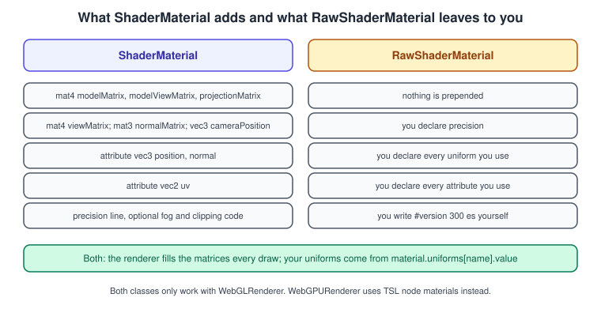
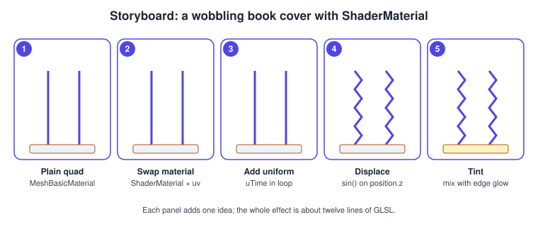
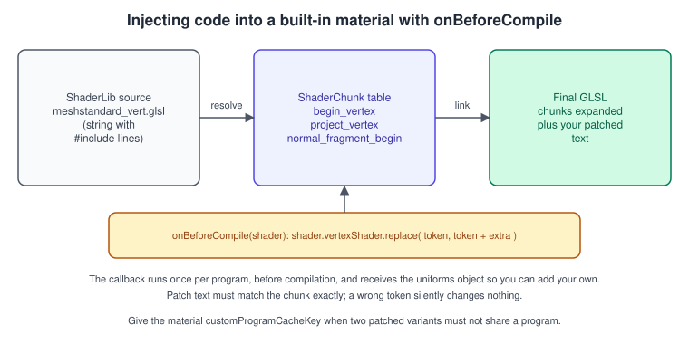

three.js Custom Shaders (GLSL)
|
This content was generated with the assistance of AI and should be verified against the official documentation before being relied on in production. |
three.js ships dozens of ready-made materials, but sooner or later a project needs a look that none of them gives: a cover that
ripples, a book that glows at its edges, a shelf that sways in a draught. The WebGLRenderer offers two ways to get there. You can
write a complete shader pair and hand it to ShaderMaterial or RawShaderMaterial, or you can keep a built-in material such as
MeshStandardMaterial (so lights, shadows, fog, skinning and instancing keep working) and patch a few lines of its source with
onBeforeCompile. This page covers both, with the options each one takes, the traps that waste afternoons, and the limits: custom GLSL
is a WebGLRenderer feature, and the new WebGPURenderer replaces it with TSL.
The facts were checked in November 2026 against three.js r187 (npm three@0.187.0), the baseline of this sub-section. The code is
ES modules built with Vite (see Getting Started with three.js) and runs in
any browser with WebGL 2, which is every evergreen browser; WebGLRenderer has not supported WebGL 1 since r163, so all shaders here
are compiled as GLSL ES 3.00 under the hood even when you write the older syntax. For the underlying shader language see
GLSL ES 1.00 and 3.00; for the generic idea of uniforms, attributes and varyings
see Shading Languages Landscape.
In the Bookshelf three.js track this page sits between the PBR shelf and the post-processing step: the first example gives a book cover a wobble driven by time, the second makes the whole shelf sway without losing its PBR look. The glowing title that appears later is built with TSL on the WebGPU path, see WebGPURenderer and TSL, and the bloom that makes it shine is in Post-processing.
Choosing between ShaderMaterial, RawShaderMaterial and onBeforeCompile

| Route | What three.js adds for you | Use it when |
|---|---|---|
|
A prefix with precision, the matrix and camera uniforms, the standard attributes, the |
You want a completely own look, with your own uniforms, and no lighting model from three.js. |
|
Nothing: your text goes to the driver as written (apart from the |
You port a shader from another project, or you want full control of every declaration, or you want to measure exactly what is compiled. |
|
All of the built-in shader, with lights, shadows, tone mapping, fog, skinning, morph targets and instancing intact. |
You want the standard PBR look and a small change to the geometry or colour: wind, a dissolve, a hologram edge. |
A simple rule: if the effect has to be lit like the rest of the scene, patch a built-in material; if it ignores lights (a hologram,
an outline, a debug view, a procedural background) write a ShaderMaterial. RawShaderMaterial is the exception, for the cases above.
ShaderMaterial in detail
The constructor takes an object of parameters; every one can also be set as a property afterwards.
| Parameter | Meaning |
|---|---|
|
An object whose keys are uniform names and whose values are objects with a |
|
The GLSL source strings. The vertex shader must write |
|
An object of preprocessor macros: |
|
|
|
An object of booleans that request GLSL extensions where the feature is not core, such as |
|
|
|
|
|
The ordinary |
|
Set it to |
Built-in uniforms and attributes
ShaderMaterial declares these for you, in both shaders where they apply:
| Name | Type | Meaning |
|---|---|---|
|
|
Object space to world space. |
|
|
Object space to view (camera) space. |
|
|
View space to clip space. |
|
|
World space to view space. |
|
|
Inverse transpose of the upper 3 by 3 of |
|
|
The camera position in world space. |
|
|
The geometry attributes of those names (vertex shader only). Any other attribute you add to the |
The matrix chain is the one explained in Coordinate Spaces and Transforms:
\( p_{ clip } = P \cdot V \cdot M \cdot p \), which the first line of nearly every three.js vertex shader writes as
projectionMatrix * modelViewMatrix * vec4( position, 1.0 ). With InstancedMesh and BatchedMesh the instance transform is
applied through an #include chunk; a hand-written ShaderMaterial that skips those chunks draws every instance in the same place.
Uniform value types
| GLSL type | JavaScript value |
|---|---|
|
|
|
|
|
|
|
|
arrays such as |
A JavaScript array of the matching type (a |
|
A plain object with one property per member, uniform names written as |
Two details cause most of the confusion. A Color is stored in the working colour space (linear sRGB by default), so a Color passed
as a uniform already behaves as a linear value in the shader. A Texture loaded as a base colour must have
texture.colorSpace = THREE.SRGBColorSpace; the GPU then decodes it to linear when you sample it. The full story is in
Textures and Colour Management.
Example 1: a wobbling book cover
The example loads the Bookshelf cover texture, displaces a plane in the vertex shader with a travelling wave, and brightens the edges in
the fragment shader. It is a complete main.js; the HTML is the one from the getting-started page with a canvas or a plain
body. The texture file is bookshelf-cover.png and goes into the Vite
public/ folder.


import * as THREE from 'three';
const renderer = new THREE.WebGLRenderer({ antialias: true });
renderer.setPixelRatio(Math.min(window.devicePixelRatio, 2));
renderer.setSize(window.innerWidth, window.innerHeight);
document.body.appendChild(renderer.domElement);
const scene = new THREE.Scene();
scene.background = new THREE.Color(0x1b1b22);
const camera = new THREE.PerspectiveCamera(45, window.innerWidth / window.innerHeight, 0.1, 50);
camera.position.set(0, 0, 4);
const cover = new THREE.TextureLoader().load('/bookshelf-cover.png');
cover.colorSpace = THREE.SRGBColorSpace; // sampled values arrive linear in the shader
cover.anisotropy = renderer.capabilities.getMaxAnisotropy();
const vertexShader = /* glsl */ `
uniform float uTime;
uniform float uAmplitude;
varying vec2 vUv;
void main() {
vUv = uv;
vec3 p = position;
// a wave that travels along x and fades towards the spine on the left
float fade = smoothstep(-0.5, 0.5, p.x);
p.z += sin(p.x * 6.0 - uTime * 2.0) * uAmplitude * fade;
gl_Position = projectionMatrix * modelViewMatrix * vec4(p, 1.0);
}
`;
const fragmentShader = /* glsl */ `
uniform sampler2D uMap;
uniform vec3 uGlow;
varying vec2 vUv;
void main() {
vec4 texel = texture2D(uMap, vUv);
// distance to the nearest edge of the cover, 0 at the border and 0.5 in the middle
vec2 d = min(vUv, 1.0 - vUv);
float edge = 1.0 - smoothstep(0.0, 0.08, min(d.x, d.y));
gl_FragColor = vec4(texel.rgb + uGlow * edge, texel.a);
#include <tonemapping_fragment>
#include <colorspace_fragment>
}
`;
const material = new THREE.ShaderMaterial({
uniforms: {
uTime: { value: 0 },
uAmplitude: { value: 0.12 },
uMap: { value: cover },
uGlow: { value: new THREE.Color(0xffc857) },
},
vertexShader,
fragmentShader,
side: THREE.DoubleSide,
});
// 64 x 64 segments: a vertex shader can only move vertices that exist
const mesh = new THREE.Mesh(new THREE.PlaneGeometry(1.6, 2.2, 64, 64), material);
scene.add(mesh);
const timer = new THREE.Timer();
timer.connect(document);
renderer.setAnimationLoop(() => {
timer.update();
material.uniforms.uTime.value = timer.getElapsed();
renderer.render(scene, camera);
});
window.addEventListener('resize', () => {
camera.aspect = window.innerWidth / window.innerHeight;
camera.updateProjectionMatrix();
renderer.setSize(window.innerWidth, window.innerHeight);
});Source: three.js docs: ShaderMaterial
What the example shows, and why each line is there:
-
The wave is computed per vertex, so the plane needs many segments. The fragment shader cannot move geometry.
-
varying vec2 vUvcarries the interpolated texture coordinates from the vertex to the fragment stage, exactly as in the raw WebGL pipeline of The WebGL Rendering Pipeline. -
The two
#includelines at the end are the part people forget. AShaderMaterialwrites whatevergl_FragColorholds to the output; the conversion from the linear working space to the sRGB display space, and the renderer’s tone mapping, are only applied when you include those chunks. Withoutcolorspace_fragmentthe linear values reach the screen unconverted and the picture looks too dark and flat. -
The timer is
THREE.Timer, which replaces the deprecatedClockfrom r183;connect(document)pauses it when the tab is hidden. -
uGlowis aColor, so it is already linear; adding it before the colour-space chunk keeps the arithmetic in linear space, which is where light additions belong.
GLSL ES 3.00 with glslVersion
With glslVersion: THREE.GLSL3 you may write modern syntax. The same fragment shader looks like this:
const fragmentShader3 = /* glsl */ `
uniform sampler2D uMap;
uniform vec3 uGlow;
in vec2 vUv;
void main() {
vec4 texel = texture(uMap, vUv);
vec2 d = min(vUv, 1.0 - vUv);
float edge = 1.0 - smoothstep(0.0, 0.08, min(d.x, d.y));
gl_FragColor = vec4(texel.rgb + uGlow * edge, texel.a);
#include <colorspace_fragment>
}
`;
const material3 = new THREE.ShaderMaterial({
glslVersion: THREE.GLSL3,
uniforms: material.uniforms,
vertexShader: vertexShader.replace('varying vec2 vUv;', 'out vec2 vUv;'),
fragmentShader: fragmentShader3,
});Source: three.js docs: ShaderMaterial
The differences from the legacy syntax are the ones documented in GLSL ES 1.00 and 3.00:
in/out instead of attribute/varying, texture() instead of texture2D(), and a user-declared fragment output with
layout(location = n) out for multiple render targets. For a ShaderMaterial, three.js defines the output so that gl_FragColor keeps
working; a RawShaderMaterial must declare its own output variable and begin with #version 300 es. Two uniforms objects can be shared between
materials (as above) when you want one slider to drive both, but then UniformsUtils.clone is the way to give each material its own
copy.
Writing a RawShaderMaterial
A RawShaderMaterial is the same API with an empty prefix. Everything the shader touches must be declared, and precision must be
set in the fragment shader:
const raw = new THREE.RawShaderMaterial({
glslVersion: THREE.GLSL3,
uniforms: { uColor: { value: new THREE.Color(0x4f46e5) } },
vertexShader: /* glsl */ `#version 300 es
uniform mat4 modelViewMatrix;
uniform mat4 projectionMatrix;
in vec3 position;
void main() {
gl_Position = projectionMatrix * modelViewMatrix * vec4(position, 1.0);
}`,
fragmentShader: /* glsl */ `#version 300 es
precision mediump float;
uniform vec3 uColor;
out vec4 outColor;
void main() { outColor = vec4(uColor, 1.0); }`,
});Source: three.js docs: RawShaderMaterial
The renderer still fills modelViewMatrix and projectionMatrix because it recognises the declared names; what it does not do is
add the declarations, the #include expansion or the colour-space handling. It also does not add the #version line, so the
text above carries it. Use this class when you want to know exactly what the driver receives.
Patching a built-in material with onBeforeCompile
A built-in material is a template: its GLSL is a list of #include <name> lines, and each name is a chunk stored in
THREE.ShaderChunk. The renderer expands the chunks, then calls the material’s onBeforeCompile(shader, renderer) once, before
compiling the program. The shader object holds vertexShader and fragmentShader (the template text, with the #include lines still visible) and
uniforms. You edit the strings and add uniforms; the edited
version is what gets compiled.

Example 2: the shelf sways in the wind
The shelf from bookshelf.glb uses MeshStandardMaterial. The patch below moves the vertices of every
material in the loaded scene by a sine wave scaled by height, while lights, shadows and the PBR look are untouched.
import * as THREE from 'three';
import { GLTFLoader } from 'three/addons/loaders/GLTFLoader.js';
const uTime = { value: 0 }; // one uniform object shared by every patched material
function addSway(material) {
material.onBeforeCompile = (shader) => {
shader.uniforms.uTime = uTime;
shader.uniforms.uStrength = { value: 0.03 };
shader.vertexShader = shader.vertexShader
.replace(
'#include <common>',
`#include <common>
uniform float uTime;
uniform float uStrength;`
)
.replace(
'#include <begin_vertex>',
`#include <begin_vertex>
// transformed is the object-space position after the begin_vertex chunk
transformed.x += sin(uTime * 1.5 + transformed.y * 3.0) * uStrength * transformed.y;`
);
};
// materials with and without the patch must not share a compiled program
material.customProgramCacheKey = () => 'sway-v1';
material.needsUpdate = true;
}
const gltf = await new GLTFLoader().loadAsync('/bookshelf.glb');
gltf.scene.traverse((o) => {
if (!o.isMesh) return;
const materials = Array.isArray(o.material) ? o.material : [o.material];
materials.forEach(addSway);
});
scene.add(gltf.scene);
renderer.setAnimationLoop((ms) => {
uTime.value = ms / 1000;
renderer.render(scene, camera);
});Things to know about this technique:
-
Match the text exactly.
String.replacewith a string that is not found silently does nothing.#include <begin_vertex>and#include <common>are stable anchors, but the chunk contents change between releases. After upgrading three.js, printshader.vertexShaderonce (or read the chunk withTHREE.ShaderChunk.begin_vertex) and check that your patch still lands where you expect. -
Shadows need the same patch. The shadow pass uses a separate depth material, so a displaced mesh casts its un-displaced shadow. Assign a patched
customDepthMaterial(aMeshDepthMaterialcarrying the same edit) to the mesh, andcustomDistanceMaterialfor point lights. -
Program caching. Materials that are the same class and have the same parameters share one compiled program. When the patch text differs between materials, give each variant its own
customProgramCacheKey; when the patch is identical the key lets them share. -
Uniforms are shared by object. Assigning
shader.uniforms.uTime = uTimekeeps one{ value }for all materials so a single assignment per frame updates every one. -
needsUpdate. Set it after assigningonBeforeCompileto a material that has already been rendered, so the program is rebuilt. -
Not for
WebGPURenderer.onBeforeCompileis ignored there; the equivalent is a node graph, see the last section.
Other injection points
| Chunk | What it controls | Typical edit |
|---|---|---|
|
Declares |
Displace vertices: wind, waves, explosions. |
|
Applies model-view and projection to |
Replace the projection (billboards, curved world). |
|
The object-space normal and its transform |
Keep normals correct after displacement. |
|
Multiplies the diffuse colour by the map |
Tint, recolour or dissolve the base colour. |
|
Vertex colours and the alpha map |
Alpha cutouts and dissolve edges. |
|
Adds the emissive map |
Pulsing emissive light (feeds bloom). |
|
Writes the final colour, applies tone mapping and the output colour space |
Debug views; anything after them overwrites the lit result. |
Source: three.js docs: WebGLRenderer and the chunk sources under three.js repository: ShaderChunk
Keeping shaders in their own files
Embedding GLSL in template strings is fine for a few lines. For longer shaders, Vite imports any file as text with the ?raw suffix,
which also gives you syntax highlighting in the editor:
import vertexShader from './shaders/wobble.vert?raw';
import fragmentShader from './shaders/wobble.frag?raw';
const material = new THREE.ShaderMaterial({ vertexShader, fragmentShader, uniforms });Source: Vite: Importing asset as string
Reusable snippets can be shared between shaders with your own #include support: ShaderMaterial resolves #include <name> only
for names registered in THREE.ShaderChunk, so a project chunk is added with THREE.ShaderChunk.myNoise = noiseSource before the first
render and then included as #include <myNoise>.
Debugging shader errors
-
The console message. On a compile or link error three.js logs the driver’s message together with the source, with line numbers that include the prefix it added, so the line in your text is offset.
renderer.debug.checkShaderErrors(true by default) controls this; switching it off in production saves a synchronousgetProgramParametercall per program. -
A custom handler. Assign
renderer.debug.onShaderError = (gl, program, vertexShader, fragmentShader) => { ... }to show the log in your own UI. -
Visual debugging. Write intermediate values to the colour:
gl_FragColor = vec4( vUv, 0.0, 1.0 )shows the UVs,vec4( normal * 0.5 + 0.5, 1.0 )shows normals. Remember that the colour-space chunk changes what you see; leave it out while debugging raw values. -
Tools. Spector.js and the browser devtools show the final program text and uniform values, as described in Performance and Debugging.
Pitfalls
-
Washed-out or too dark colours. Missing
#include <colorspace_fragment>in aShaderMaterial, or a texture withoutcolorSpace = SRGBColorSpace. -
Everything invisible.
gl_Positioncomputed without the projection, the mesh culled because ofside, or alpha below 1 withouttransparent: true(the sort order then puts it behind the background). -
A moved vertex but the old shadow or the old picking. The depth and raycast code use the original geometry; a
Raycasterintersects the un-displaced mesh. -
Uniform not updating. The uniform name in the JavaScript object differs from the GLSL name, or the object was replaced (
material.uniforms = { ... }after the first render) instead of editing.value. -
Instances all at one place. A custom vertex shader on an
InstancedMeshmust applyinstanceMatrix; either include the chunks or multiply by it yourself. -
Shared vectors. Putting one
Vector3object in two materials links them; clone it. -
Allocations in the loop.
new THREE.Color()ornew THREE.Vector3()each frame creates garbage that causes stutters; update the existing value with.set()and.copy().
Performance notes
Uniform updates are cheap. Compiling is not: each distinct combination of material class, defines and patch text is one program, and
a compile can take tens of milliseconds, in a stall that shows up as a dropped frame. Keep the number of variants small, change
defines rarely, and use renderer.compileAsync(scene, camera) (with KHR_parallel_shader_compile where available) to compile before the first
frame, as described in Performance and Disposal. Vertex displacement
is free compared with the fragment cost of procedural noise: a 5-octave noise per pixel at a high device pixel ratio is the usual cause of a
slow custom shader, so cap the ratio as the examples do.
Custom shaders and WebGPURenderer
WebGPURenderer (imported from three/webgpu) generates WGSL, or GLSL for its WebGL 2 fallback, from node graphs written in TSL.
ShaderMaterial, RawShaderMaterial and onBeforeCompile are not supported there, and EffectComposer is not either. A GLSL
shader must therefore be rewritten as a node material (MeshStandardNodeMaterial, NodeMaterial) if the project is to move; the
wobbling cover above becomes about ten lines of positionLocal, time and sin() nodes. The migration and the TSL basics are in
WebGPURenderer and TSL. Until then, projects that depend on custom GLSL
stay on WebGLRenderer, which remains fully supported.
Where the books are outdated
The books cover custom shaders in PAR chapter 3, LTJ chapter 4 (and 11 for shader-based post-processing) and TCB chapter 5.
| Book idea | Today |
|---|---|
Shaders stored in |
Template strings, or separate files imported with |
A global |
ES modules from |
GLSL ES 1.00 only, |
|
|
Attributes are taken from the geometry; derivatives are core in WebGL 2. Check the current parameter table above. |
Colour output as raw |
Colour management is on by default (r152); a |
Patching shaders by copying the whole |
|
Custom shaders as the way to reach every effect |
Still valid for |
References
-
three.js documentation: ShaderMaterial, RawShaderMaterial, Material, WebGLRenderer
-
three.js manual: three.js manual
-
three.js shader chunks: ShaderChunk sources
-
three.js releases and migration guide: releases, Migration Guide
-
Khronos: GLSL ES 3.00 specification
-
Books: Tony Parisi, WebGL: Up and Running (O’Reilly, 2012); Jos Dirksen, Learning Three.js, 2nd edition (Packt, 2015) and Three.js Cookbook (Packt, 2015)